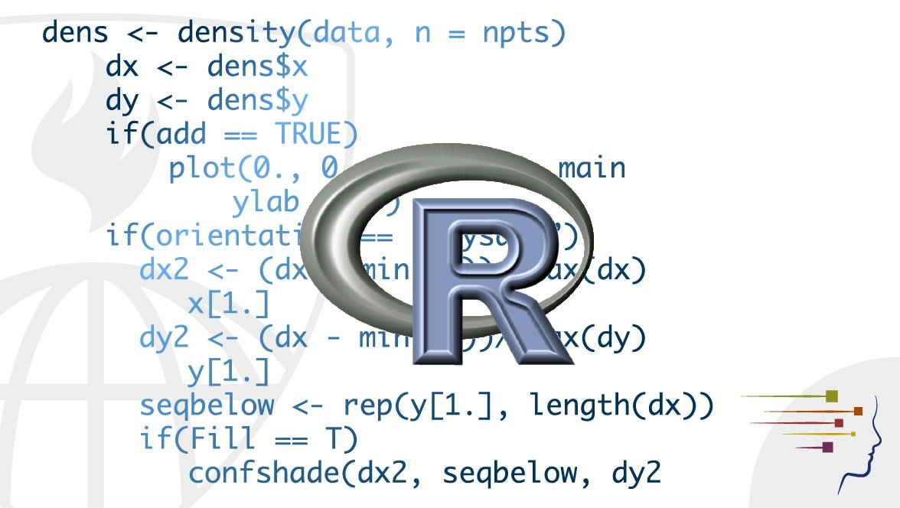
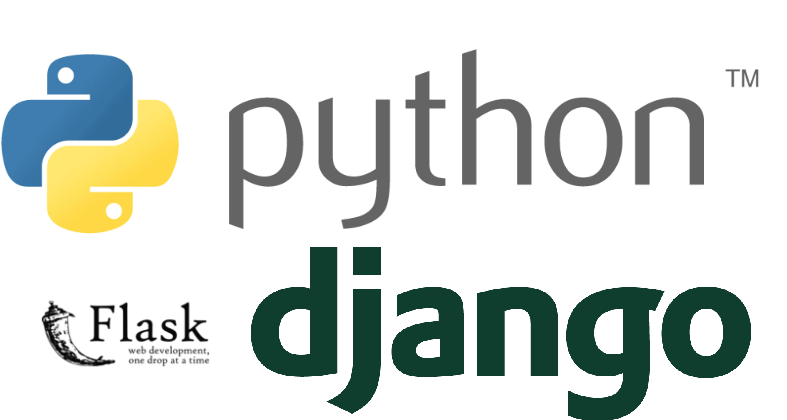

تجربة غريبة : صناعة موقع بلغة آر
September 2 2025
من أكثر التجارب الغريبة اللي سويتها , بناء موقع إلكتروني بلغة فقط للإحصاء وتحليل البيانات.
اقرأ المزيد
September 2 2025
من أكثر التجارب الغريبة اللي سويتها , بناء موقع إلكتروني بلغة فقط للإحصاء وتحليل البيانات.
اقرأ المزيد
Jun 30 2025
The process of using data to understand different things.
اقرأ المزيد
Feb 22 2025
هندسة البرمجيات (Software Engineering) هو مفهوم واسع جداً لدرجة أنه أصبح تخصصاً جامعياً مستقلا بحد ذاته عن علوم الحاسب (Computer Science) وتقنية المعلومات (IT) .
اقرأ المزيدJan 10 2025
In today’s blog, we’ll dive into the 2017 Stack Overflow Developer Survey, a treasure trove of insights about developers worldwide. We’ll analyze five key aspects:
اقرأ المزيدNov 15 2024
أُنشئت شركة مايكروسوفت الشهيرة عام 1975 من قِبل الزميلين بيل غيتس وبول ألين , كانت الشركة في بادئ الأمر لتطوير أمور بسيطة ثم لاحقاً طورا نظام تشغيل مبني على يونكس مسمى بـ"زينيكس" .
اقرأ المزيدNov 13 2024
في مجال قواعد البيانات يوجد هناك نوعان لنظم إدارة قواعد البيانات (DBMS) :
اقرأ المزيدMay 7 2021
https://youtube.com/embed/1ELlQ8gqGQM
اقرأ المزيد
Feb 3 2021
ستصبح وحيداً , بلا أحد حولك ويحميك تدخل خانات دردشة الإنترنت تجدها فارغة تدخل مواقع التواصل كذلك فارغة تخرج من شقتك الكئيبة
اقرأ المزيد
Oct 22 2020
في القرنين الثامن عشر والتاسع عشر أتسع نطاق الإمبراطورية العمانية ليصل إلى أطراف الهند والشرق الأوسط وحتى أفريقيا حتى تم إنشاء سلطة شبه مستقلة تدعى (سلطة زنجبار) .
اقرأ المزيدSep 2 2020
التيم سبيك هو عبارة عن برنامج صوتية يحوي العديد من الغرف والتي بعضها يتم استئجارها فترة معينة وهي كانت الوسيلة الوحيدة تلك الفترة أي من ظهور الأنترنت وحتى بدايات عقد 2010
اقرأ المزيدJul 10 2020
في الأرض هناك أربعة ملوك فرضوا سيطرتهم على كاملها او على الأقل جعلوا الآخرين يعرفون بوجودهم الملوك الأربعة سيتم تفصيلهم في فيديوهات ومنشورات لاحقة
اقرأ المزيدJul 5 2020
قبل 8 أشهر خرج كل من الستريمرز الشهيرين نينجا وشراود من المنصة الشهيرة تويتش التابعة لشركة أمازون بسبب عرض جاء من منافس لتويتش وهو موقع ميكسر التابع لشركة مايكروسوفت .
اقرأ المزيدJun 5 2020
أيام الدولة العباسية وفي عصر تولي الترك للوزارات وتحكمهم في الخلافة بعد وفاة المتوكل . كان هناك قائد يدعى أحمد بن طولون ذو أصل تركي أحسن القتال مع العباسيين
اقرأ المزيد
Aug 9 2016
في مدينة بابل وبعد تولي نبوخذنصر الثاني الحكم للامبراطورية البابلية الجديدة او ماتسمى بالامبراطورية الكلدانية
اقرأ المزيد